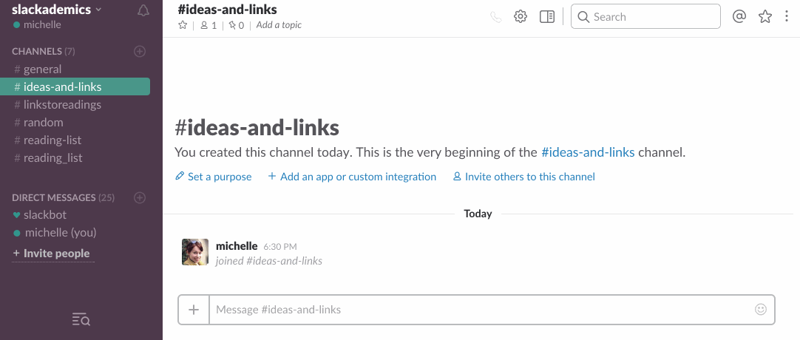
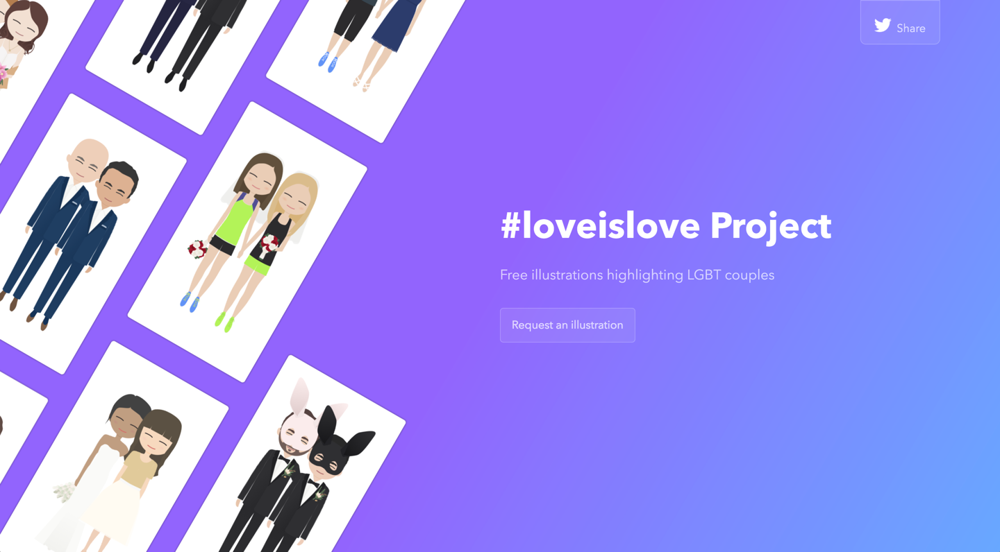
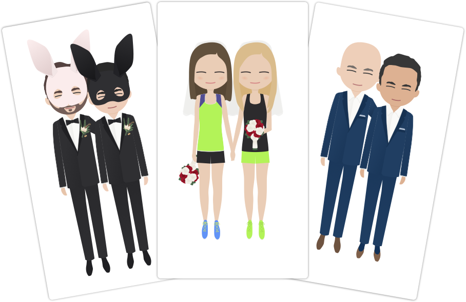
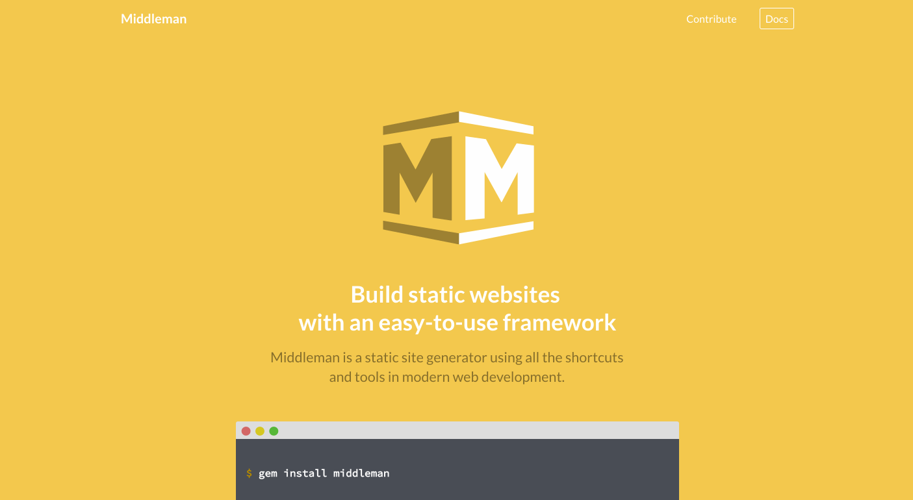

-
A bot to help you read your way through the next 4 years
Nov 28, 2016
Tutorial for using Google Spreadsheets and Slack to create a reading group bot

Since the election, there’s been a noticeable uptick in activism and engagement around important issues that shape our country. A lot of people in more liberal communities woke up to the fact that they’ve been living in an echo chamber and are actively looking for ways to expand these boundaries, often through discussion or reading. I want to share an open-sourced tool I built to help facilitate this kind of organizing.
Last week, Angelica Coleman reached out to her network about wanting to regularly read and discuss history, culture, and race with other people...
Read more… -
The loveislove project
Nov 14, 2016

I started the #loveislove project after the 2016 election, in response to the fear felt by individuals in the LGBT community. In support of the fact that everyone deserves love (and all the rights that come along with that), I'm making free digital illustrations of LGBT couples in hopes of providing a tiny moment of happiness and support.
Couples or friends and family can request an illustration. These make nice sentimental keepsakes and gifts.
Visit landing page and share the love

What to expect
One illustration of the happy couple, delivered digitally. You will get the opportunity to request changes. Wait times vary based on availability...
Read more… -
Friendship Matching Game
Dec 28, 2015

It's not every day you run across a genuine, deep friendship. I've been lucky enough to have a best friend for the past 22 years; we grew up across the street from each other, and her family continues to feel like an addition to my own family.
I wanted to find a way to celebrate all our years together. My mom was always very trigger-happy with the camera, which means we have tons of amazing photos documenting many years together. I decided to pick some of my favorites to illustrate and turn into a Friendship Matching Game.

I just posted a case study with full visuals for the game. Visit the case study now.
Read more… -
Design is a process: shortened design sprints
Jun 3, 2015

I’ve been wanting to write a post about design processes for a while now. I wrote a full case study about a specific design sprint at thoughtbot, which you can view here, but I wanted to continue the discussion about ways to iterate on this process and how to apply design sprints to different types of challenges and projects.
Very often, I’m not in a position to run a full sprint for a new project, or for a new problem that comes up mid-project. I also generally don’t have the time to go through an entire sprint with side-projects and personal projects outside of work. For these, I’ve started adapting activities from a traditional design...
Read more… -
Tutorial: Create an interactive keyboard with HTML and CSS
Jun 1, 2015

For the landing page of this website, I thought it would be fun to create some of my illustrations in erb and SCSS so they could be more fun and interactive. Today, I wanted to share a brief tutorial about how to create a CSS keyboard with keys that get "pressed" when the user hovers on them. I did this first in HTML and CSS, and then with erb and SCSS.
Try it out - mouse over the keys:
(Doesn't work on mobile devices)
I recreated the effect above - note that the code in this post is slightly different than the landing page, since...
Read more… -
Middleman Case Study
May 22, 2015

I've started putting project case studies up on the site, and I just finished writing one for the re-design of the Middleman website.
Middleman is a static site generator using all the shortcuts and tools in modern web development. It's built on Ruby, and can be used to get static sites up and running quickly and painlessly.
Like any good web framework, Middleman has a documentation site that aims to help people understand the tool, use the tool easily, troubleshoot problems, and contribute changes to open-source features. The existing documentation site needed a brand-overhaul, as well as some attention to the overall organization of...
Read more… -
10 Illustrated Dribbble Accounts To Follow
May 14, 2015
I've been reading some articles about Dribbble's impact on the design community. Some call it the "Dribbblification" of design; designers who post finished illustrations and slick animations tend to get the most response on Dribbble, leading young designers to think that design is fundamentally tied to beautiful illustrations. This leaves out a large discussion about process, user-centered design, product design, and product thinking, which are all integral parts of designing products that people use.
That being said, Dribbble is a fantastic repository of inspiration, especially when it comes to illustrations. I'm constantly inspired by...
Read more… -
Xcode as a prototyping tool for designers
May 1, 2015

There are a lot of prototyping tools out there for designers. Some of the tools I've used in the past include Pixate, After Effects, and Flinto, all of which provide different ways for designers to show interaction and test their designs.
However, after completing Codepath’s iOS for Designers bootcamp, I've started using Xcode as a prototyping tool for many projects. There are a few reasons why I think it can be a great process for designers working on iOS projects to get comfortable with.
1. Designers benefit from understanding app development
By using the same tool that engineers use to build apps, designers can become more comfortable...
Read more… -
Codepath's iOS Bootcamp and MiniMeet
Apr 28, 2015

This year, I was fortunate enough to go through Codepath's iOS for Designers bootcamp, where I learned the ins-and-outs of Xcode, created animations in Swift, and even learned how to hook up Parse and create fully-working apps. You can read more about my thoughts about using Xcode as a designer on the thoughtbot blog.
After a few weeks of regular homework assignments where we prototyped existing apps, we all split into small groups and built our own apps. My group created an app called MiniMeet, which lets people create small, intimate meet-ups about any topic at any time. We got to present at final demo day as one of the top three apps...
Read more… -
Tutorial: Rails App Setup With Heroku and Github
Apr 25, 2015

I love how interactive web apps can be, and the amount of creativity and control you can have over a system when you know how set it up as an app. However, if you’re new to the process of creating web apps, sometimes all the moving pieces can be a bit overwhelming. In this tutorial I’ll be walking through my basic process of getting an app up and running.
Tools I Use
Here are the tools you’ll need to complete this tutorial: Terminal, Rubymine, Ruby on Rails, Git, Github, Heroku, and Heroku Toolbelt.
Ruby On Rails And Github

Ruby on Rails is a great framework that is fantastic for quick prototyping. It’s a favorite of mine when doing...
Read more…